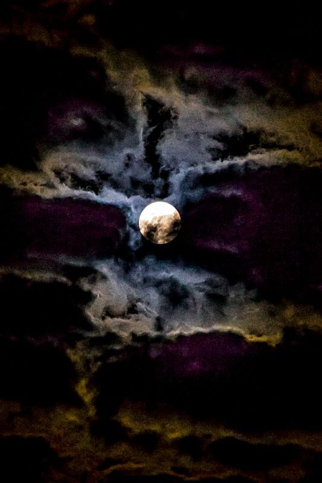

6 Начало конца
Вечером я навестила Фазенду. Гарик заметил, что сегодня тётя Клава какая-то слишком тихая, долго спит после утреннего укола.
Он докладывает нам, что его лаборатория в псевдоинституте наконец-то получила грант на проект, которого они так долго ждали. Из разговора мне стало понятно, что это первый настоящий проект лаборатории, полезный людям. Глаза его светятся, он рассказывает взахлёб. Я уже собираюсь идти делать Клавдии второй укол. Теперь я прихожу по два раза: утром и вечером. Утром она была слаба, у неё было странное выражение лица. Она мне сказала, что очень меня любит. Ещё что-то хотела сказать, но мне надо было уходить.
В какой-то момент Эдик просит меня принести ему из комнаты Клавдии аллохол в ящичке, поскольку чувствует себя неважно. Я собираюсь идти, но меня отвлекает Роберт, и Эдик идёт сам. Спустя несколько минут я иду за ним следом делать укол.
Столкнулись мы с Эдиком в дверях, когда он выходил из комнаты Клавдии. Я пытаюсь пройти, но он меня не пускает и странно глядит на меня.
- Не ходи туда
Лицо его побелело, нижняя губа чуть подрагивала. Полушепотом мне сообщает:
- Тётя Клава умерла.
- Ты уверен?
- Я же инвалид, пол жизни в больницах провел. Всякое повидал. По-видимому, это случилось утром.
Позже сообщает на ухо Роберту о прошедшем. Мы все знаем, что случилось, кроме Гарика. Никто не находит смелости перебить его воодушевленный рассказ и сказать ему, что его мама умерла. Мы так и сидим, как истуканы. Я вдруг осознала, что меня могут привлечь к ответственности: ведь у меня нет диплома медсестры. Кому какое дело, что меня учила медсестра в частном порядке делать уколы? Вдруг меня обвинят в её смерти? А я так утром её и не дослушала... Она была мне не чужой, но сейчас не осталось никаких эмоций, помимо страха.
Вдруг Роберт сорвался. Видимо, не выдержал:
- Только не считайте меня психом... Я рад, что столько лет мы здесь собирались, вы оба - хорошие люди.
Я понимаю: он подводит итог. Сегодня заседание клуба в последний раз. Больше никто сюда не придёт: смерть Клавдии поставила точку в этом вопросе.
Только зачем он всё это говорит? Надо же действовать, скорую вызывать! Может, хочет подготовить Гарика?
- Сторонний наблюдатель назвал бы наши посиделки из жизни идиотов, которые задержались в развитии лет на двадцать, бездарно растратили лучшее своё время. Но, Игорь, в общем... Хочу сказать тебе, мы тебе не чужие, иногда мы посмеивались над тобой, но знай - можешь смело рассчитывать на нашу поддержку...
Я не сразу сообразила, почему он плетет эту ахинею. Потом поняла: пьяный Роберт никак внутри себя не может переварить... Он растерялся. Хочет сказать Гарику правду, но не может, вместо этого говорит совсем не то, ходит кругами. Ведь, оказывается, не так-то просто это сказать. У Гарика не было никого ближе матери. Не каждый день сталкиваешься нос к носу с чужой смертью.
Потихоньку Гарик замечает, что с нами со всеми что-то не так.
- Гарик, мы должны сказать тебе одну вещь
- Что, опять решили меня разыграть, винтик в какой-то моей аппаратуре подкрутили?
Он даже пытался пошутить, но, видя каменное лицо Эдика, примолк
- Гарик, тетя Клава... В общем, её больше нет.
Несколько секунд он просто моргал. Потом подскочил, как ужаленный и помчался в комнату.
Через некоторое время оттуда послышался сдавленный крик, затем плач.
- Уходи, - сказал мне Эдик, - Скоро приедет полиция и скорая, надо всё засвидетельствовать. Тебе это ни к чему.
Я поделилась своими опасениями насчёт уколов. Эдик ответил:
- Иди домой. Завтра утром позвоним.
Ночью страх усилился. Меня мучили кошмары. Во сне множество белых существ окружили меня в темноте и начали кричать:
- Теперь ты вурдалака! Ты стала одной из нас.
Они кружили вокруг меня. Мне казалось, меня ищет полиция. Я спряталась, но полицейские с клыками вампиров меня нашли и привели в участок. Предъявили обвинение не в том, что от моего укола у Клавдии остановилось сердце, а в том, что предыдущей ночью я выпила её кровь.
А ведь я же не знаю, чью кровь я пила и пила ли вообще. Под утро ощутила прилив сил, но этому могли быть иные причины. Почему я согласилась пить кровь "покрытого"? У меня же есть сила воли, как я могла сдаться своему голоду?
А может, это и не я вовсе? Просто её время уже пришло. Её уход для всех был ожидаем.
- А не всё ли равно? какая разница - ты или не ты? - сказал голос, - разве это что-то меняет?
Я сообразила: ведь даже если я не при чем, это не отменяет моей вины! Ведь я могла убить кого-то ещё. Я не имею права так поступать! Я же в любом случае виновна в том, что не узнала, кто находился под “вуалью”. Ведь я же могла отказаться охотиться!
Иначе что получается: занес нож, жертва увернулась - ты не виновен?
Белые вурдалаки тянулись ко мне и даже смеялись. Но это были не те, кого я видела раньше. Скорее, хитрые бессердечные махинаторы, которых описывал Эдик.
- Иди к нам! Ты такая же, как мы! Ты убийца!
- Нет!
Не удивительно, что мне стало страшно и я, плохо понимая что делаю, воспользовалась стандартным во сне выходом - выпрыгнула в окно.
Утром мне позвонил Роберт и сказал, чтобы я не беспокоилась. Экспертизы не будет, всё зафиксировали, через три дня похороны.
Началась истерика, я поняла, что дошла до точки. Мало мне этого страха, так они ещё меня пугали ночью! Кто они такие, что творят?
Вурдалаки... что за чушь!
А вдруг и правда военные ставят эксперименты, а Эдик - засланный казачок?
- Черт возьми! Я ничего не понимаю... чувствую себя ужасно, я так скоро свихнусь!
- Хватит заниматься эмоциональной спекуляцией. Мы знаем, что в состоянии выдержать твоя психика.
- Раньше вы были поделикатнее, - насмешливо отвечаю, - почему изменилась риторика?
- Раньше мы возились с тобой, как с ребенком. Сейчас ты становишься одной из нас. Это понятно? А теперь вздремни ещё. Мы тебя любим. Мы твоя семья и будем тебя учить. Методы используем жесткие, но эффективные и ты их критиковать не будешь.
